A Blok
Bodrum 39,80 m² · Zemin 47,77 m² · Balkon 8,38 m²
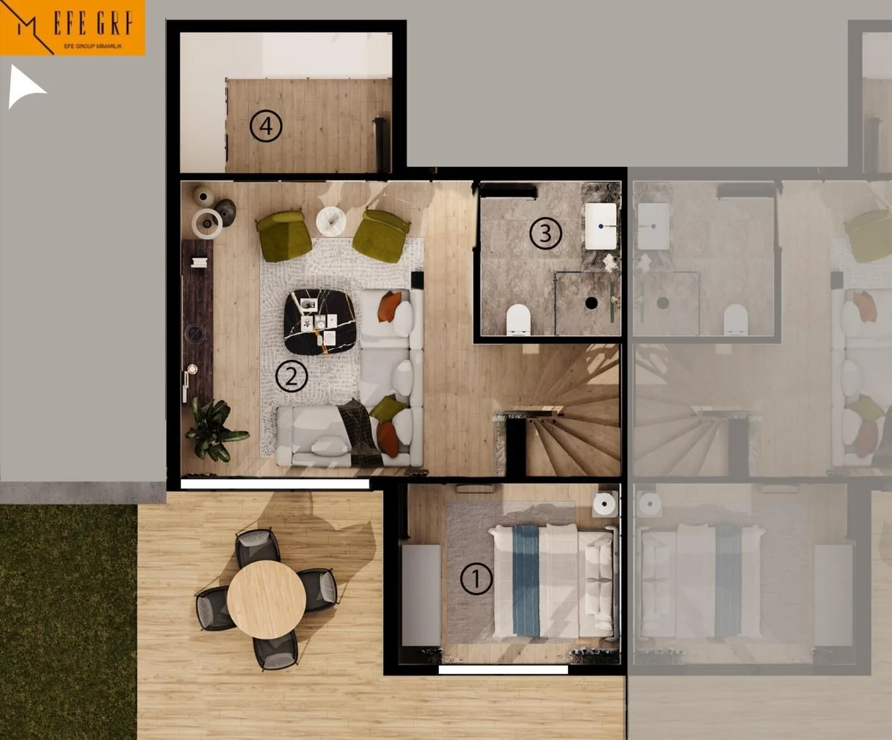
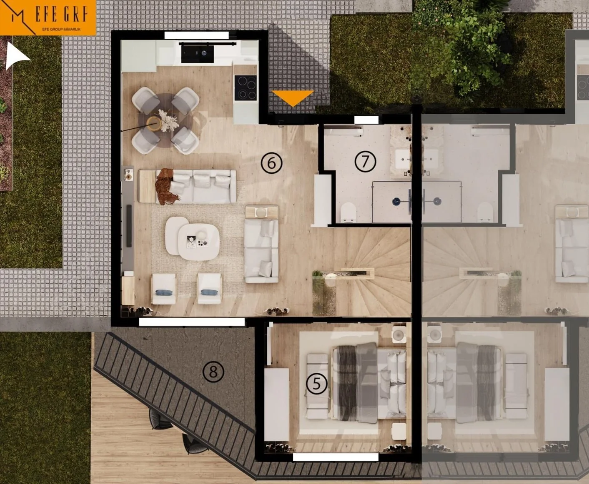
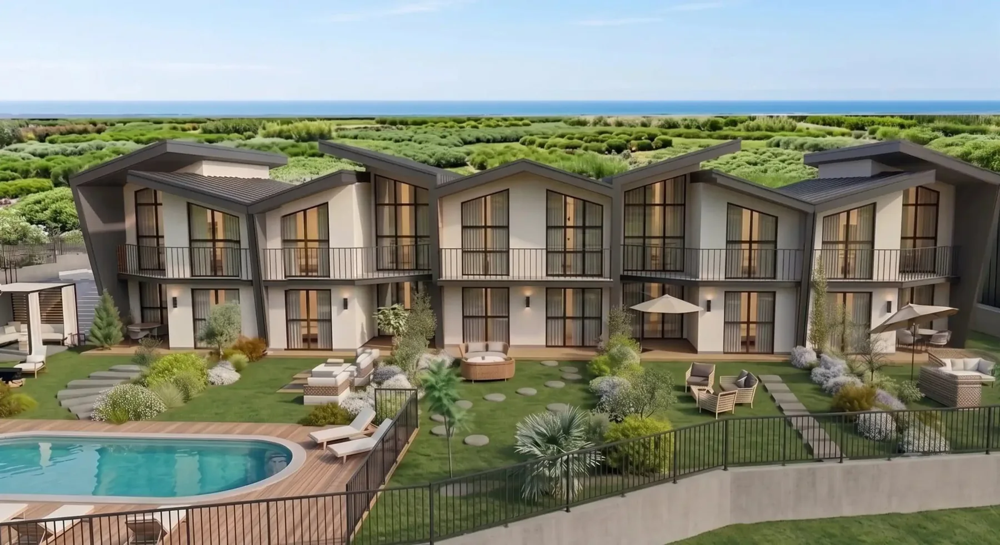
İnşaat devam ediyor
Balıklıova · Urla · İzmir
Deniz ve doğal çevreyle ilişki kuran, bağımsız girişli villaları ve ortak yaşam alanlarıyla planlanan bir konut projesi.
Proje özeti
Naturköy Balıklıova, Balıklıova'nın deniz ve yeşille kurduğu ilişkiyi modern konut yaklaşımıyla bir araya getirmeyi amaçlayan 20 villalık bir projedir.
Bağımsız giriş, özel otopark, peyzaj yolları, ortak bahçe ve havuz; kaynak proje sunumunda yaşam düzeninin temel unsurları olarak öne çıkarılıyor.
Güncel müsaitlik ve proje koşulları için iletişime geçilmelidir.
Genel yerleşim
Görseller kaynak proje sunumundaki mimari renderlardan hazırlanmıştır.
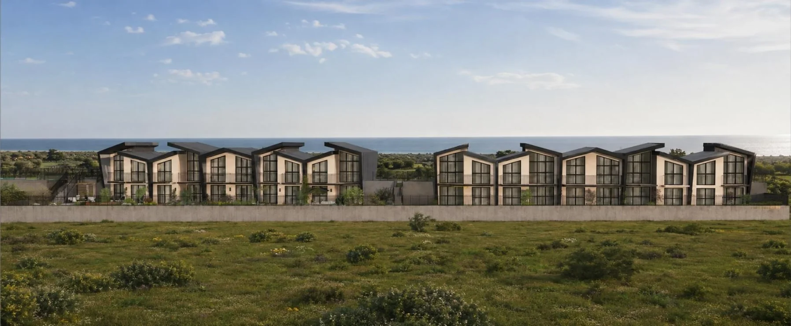
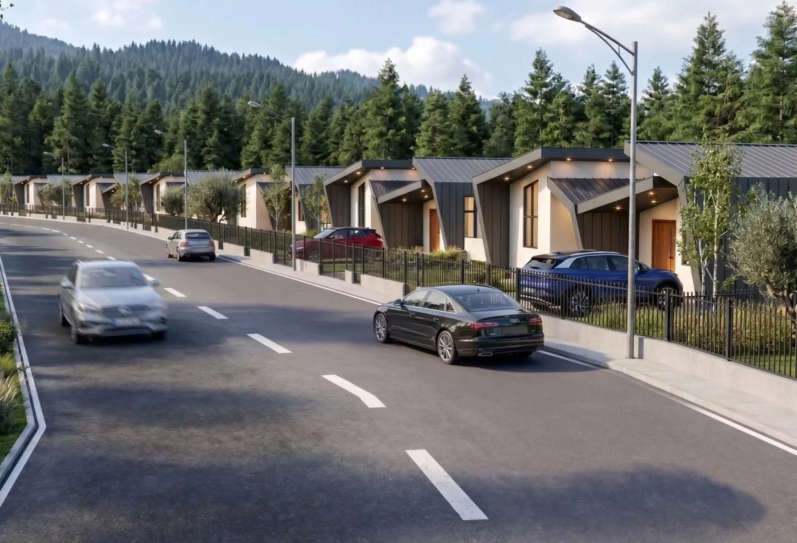
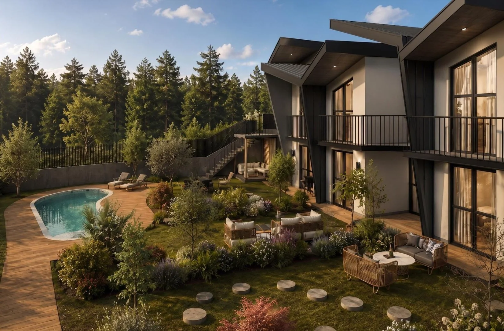
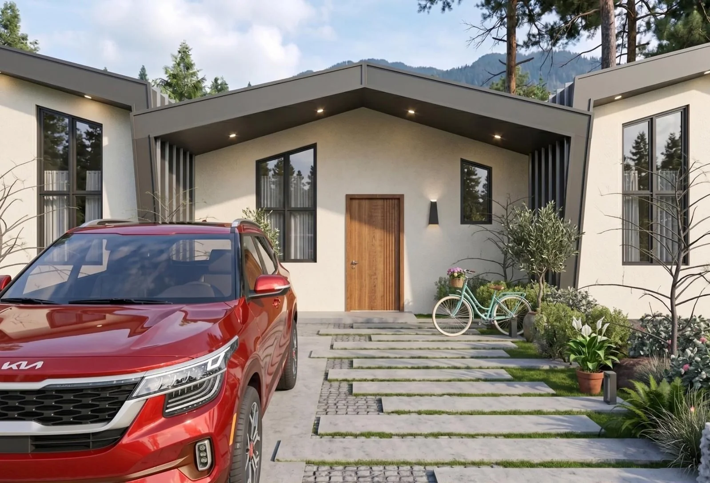
Yapı sistemi
Proje sunumunda belirtilen yapı sistemine göre çelik tel kafes çekirdek, yalıtım dolgusu ve iki yüzeyde püskürtme beton birlikte kullanılıyor.
Deprem performansı, yalıtım, hafiflik ve uygulama süresiyle ilgili ifadeler kaynak sunumun teknik anlatımıdır; bağımsız bir mühendislik raporu veya performans garantisi olarak değerlendirilmemelidir.
Kat planları
Alanlar kaynak proje sunumunda belirtilen değerlerdir.
Bodrum 39,80 m² · Zemin 47,77 m² · Balkon 8,38 m²


Bodrum 45,85 m² · Zemin 54,01 m² · Balkon 7,71 m²
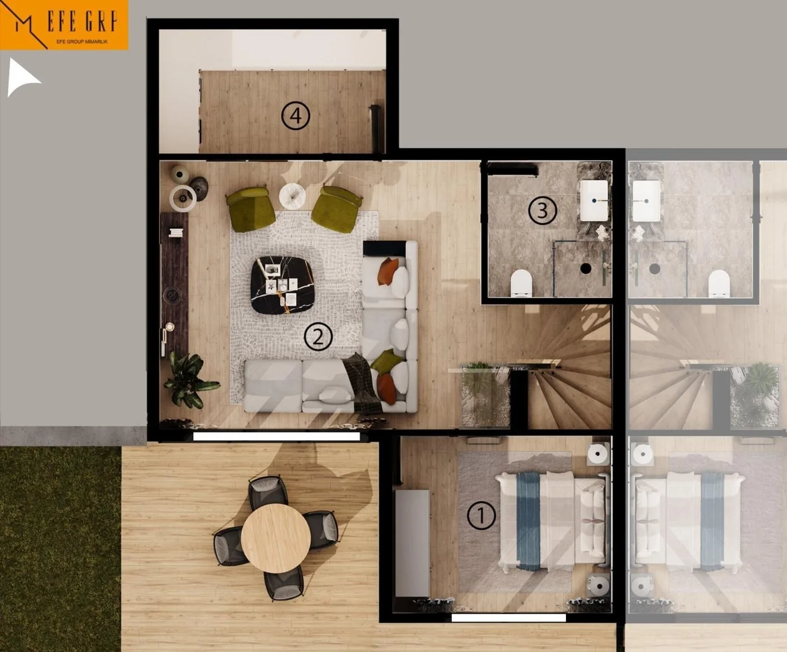
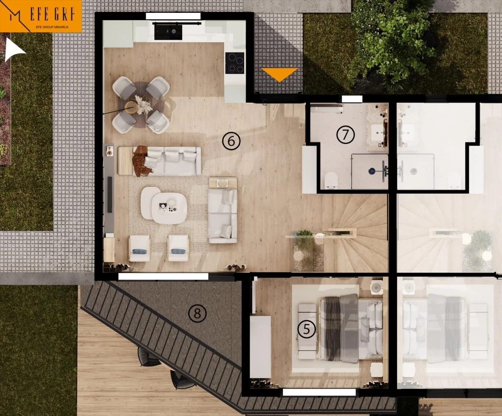
İç mekânlar
İç mekân görselleri kaynak proje sunumundaki tasarım renderlarıdır.
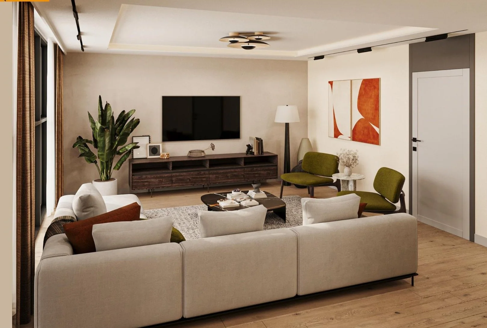
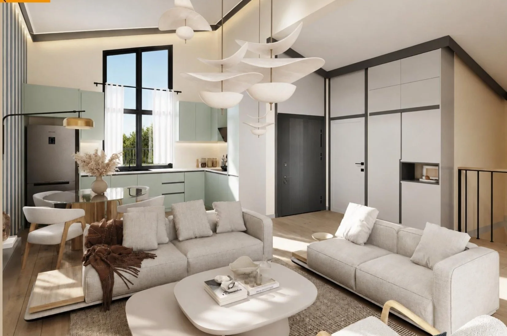
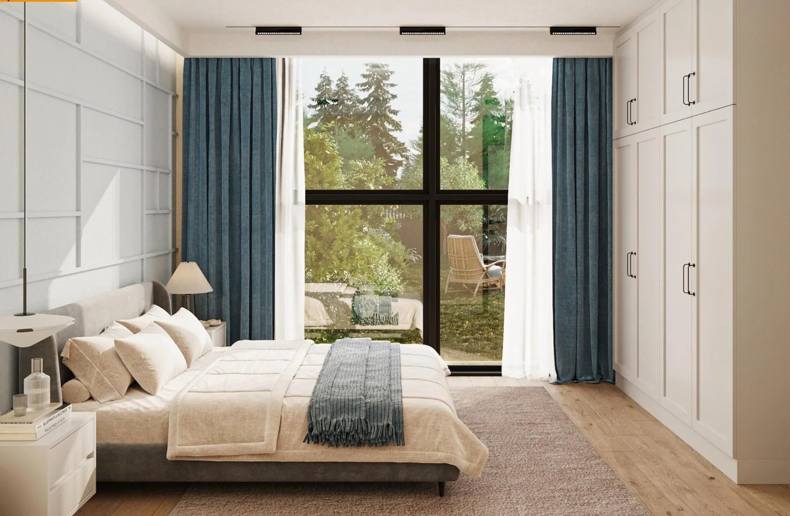
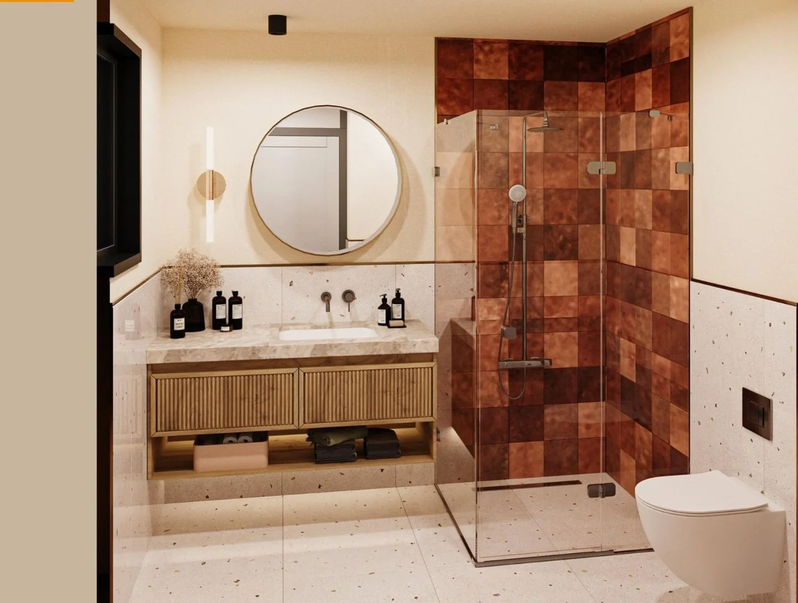
Konum ve çevre
Proje, Balıklıova, Urla, İzmir'de 235 ada 1 parselde konumlanıyor. Kaynak sunum; denize ve doğal çevreye yakınlığı, çevredeki dağ dokusunu ve şehir bağlantısını öne çıkarıyor.
Sunumda İzmir ve çevre ilçeleri için ayrıca bölgesel yatırım değerlendirmeleri bulunuyor. Bu değerlendirmeler 3M Proje Yatırım sunumundaki görüşleri yansıtır; kesin getiri, değer artışı veya yatırım garantisi değildir.
Naturköy Balıklıova
Müsaitlik, planlar ve proje ayrıntılarını değerlendirmek için Murathan Arslan ile iletişime geçin.